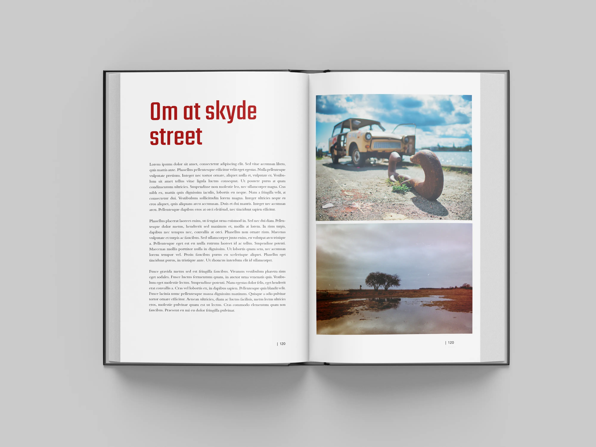
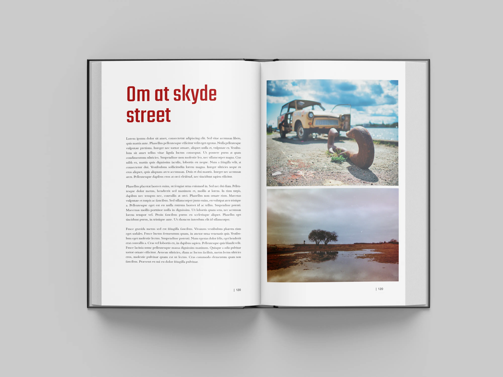

Stamdata for bogen
- Titel: Københavnerbilleder - en guide til hipster foto
- Forfatter: Sten Simons
- Antal sider: 344
- Forlag: Mellem Linjerne
- ISBN: 987-6-987654-32-1
- Pris: 399.-
Kort om bogen
Københavnerbilleder er de danske streetfotografers bibel: Det er en fusion mellem et kunstværk og en lærebog. Bogen gennemgår alle væsentlige aspekter af streetfotografering fra grundlæggende teknik til kreative eksperimenter. Alt sammen krydret med masser af inspirerende fotos. God læselys

 

Bogens kapitler
Kapitel 1 - Intro til street foto
Hvad er street foto? Det handler i bund og grund om at skyde byens liv og byens geometri (urban geometry). I dette kapitel får du en grundig intro til hvad street foto er og et overblik over nogen af de kendte street-fotografer. Alt krydret med en masse gode eksempler på street fotos.
Anmeldelser af bogen
5 af 6 stjerner
Københavnerbilleder er en grundig introduktion til at skyde billeder med retro-kant. Hvad enten du er har arbejdet med foto siden 135-filmen kom på markedet, du kun har skudt digitalt eller er helt nybegynder, er der masser af tips og tricks i bogen.
- Hanne Hovgaard, Berlingeren
Billeder fra bogen


Forfatteren
Sten Simons har en lang foto-karriere bag sig. Det hele startede i 00’erne, da han gik rundt i Pisserenden for at fotografere ungdommens forfald. Det ledte til en række udstillinger, og blev senere til hans først fotobog “Ungdomsdruk - pinlige billeder fra nattelivet.”
Derefter tog karrieren fart: Han blev fotojournalist og dokumenterede en masse dagligdagsstof fra Amager på dagbladet “Amagerkaneren.” Sideløbende begyndte han at undervise i foto, og har skrevet et utal af bøger, herunder bestsellerne Scener fra S-toget, Brun mad - en visuel odysse, og lærebogen Fotografering for evnesvage.